First Person Exploration Kit: Migrating Your Project
Project Migration Guide (from v1.2 to v2.0)
While it is easiest to start a new project, you may want or need to migrate your old projects to the newest version of First Person Exploration Kit. Below is a step by step guide that will upgrade your existing project.
NOTE: If you made deep source code changes to the original files inside the FirstPersonExplorationKit folder in Unity, you will need to note those changes and port them over to the new version.
Before doing anything else:
 ***BACKUP YOUR PROJECT***
***BACKUP YOUR PROJECT***
Table of Contents
You can also watch a tutorial video right over here.
Section 1: Project Migration Prep:
Pre-conditions
Migration Steps
- Ensure you have Unity v5.5.4p3 or newer installed.
- Close all instances of Unity and Visual Studio
- Backup your project. I recommend using source control, but just make sure it's backed up. Yes this step is repeated. But's it's really important.
- Open your project Assets folder. Go into the Assets > FirstPersonExplorationKit > Scripts folder, and put a copy of FPEInventoryManagerScript.cs somewhere safe like your Desktop.
Note: We back this file up in case you made any custom Inventory entries in the eInventoryItems enum. You'll need to port these over to the new script later on.
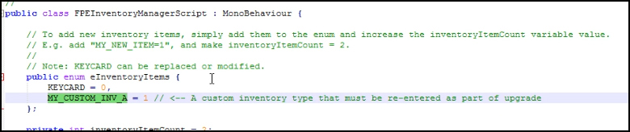
- Once FPEInventoryManagerScript.cs has been set aside, delete the entire FirstPersonExplorationKit folder from your old project.
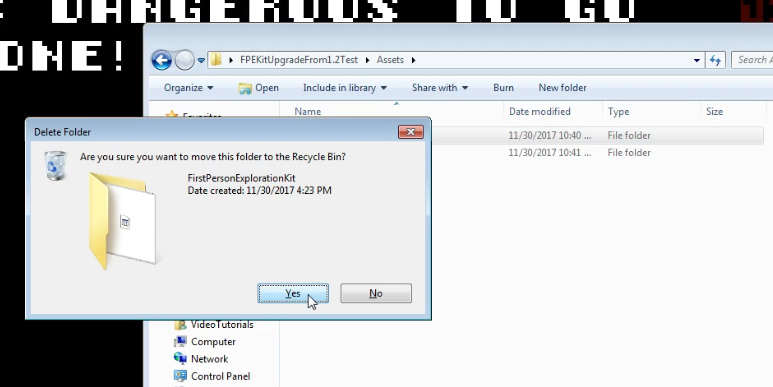
- Start a new Unity project called 'ImportFPEKitv2'.
- Open the Asset Store window, and import the new version of First Person Exploration Kit. It's very important that you click the 'Import' button when asked 'Importing Complete Project':
Note: Clicking 'Import' ensures that all project settings are also imported. This is critical for Tags, Layers, and Input mappings
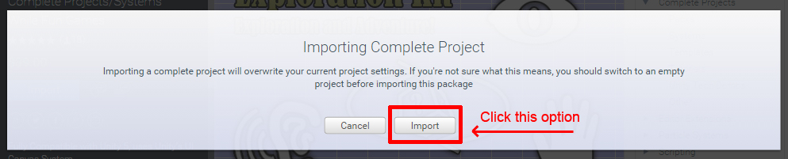
- When prompted, collapse the folder list, and that the FirstPersonExplorationKit folders is checked for import. Then, click Import
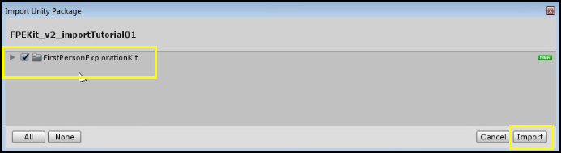
- Once import is complete, open demoScene.unity and run it. Make sure the demoScene behaves as expected. This will help visually verify project setting import was successful.
Section 2: Copying new files into old project:
- Open both your old project's main folder and the new 'ImportFPEKitv2' project folder
- Open Project Settings sub folder in 'ImportFPEKitv2'. Copy InputManager.asset, and paste it into your old project's Project Settings folder, overwriting the old file.
Note: Ideally, you will copy ALL items from the Project Settings folder from 'ImportFPEKitv2' project to your old project. However, if you can only copy InputManager.asset that will be fine. The existing FPEKit tags and layers did not change, so the old files will work as they should. If you had any NEW inputs defined, you will need to redefine them. If you really know what you are doing, you can open both files, and merge them manually. I do not recommend this approach.
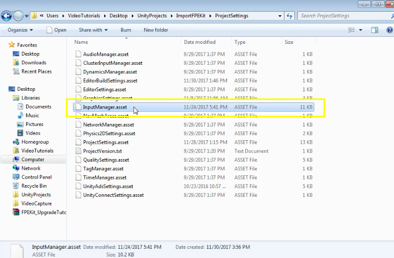
- Open the Assets sub folder in 'ImportFPEKitv2'. Copy the FirstPersonExplorationKit folder and paste it into your old project's Assets folder.
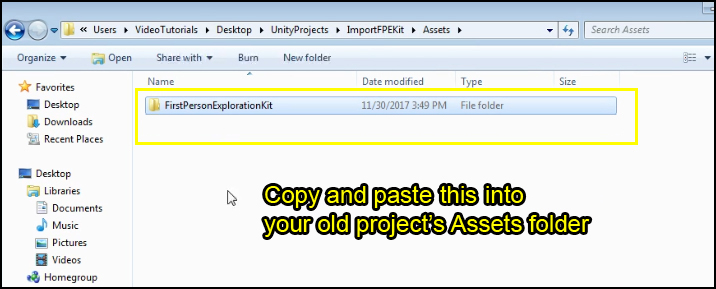
- Open Unity, and select your old project. You'll see a "Hold On" dialog appear as the new code is re-compiled and index for your old project
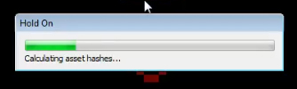
Section 3: Replacing Prefabs and Fixing Errors:
- Right away you will notice a couple of things. First, there will likely be a missing prefab in your scene. This is just the old FPEUICamera prefab which has been deprecated and can be deleted.
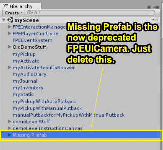
- Once that is deleted, look at the Console. There will probably be some errors that read "The type of namespace name 'FPEInteractableActivateScript' could not be found", as shown below:
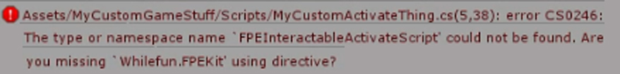
- To fix this namespace error, you need to change the effected scripts so they reference the new Whilefun.FPEKit namespace. Add the line shown below to the top of these scripts, and save them. The namespace errors should now be gone.
Note: You may need to add this namespace reference to multiple types of files. For example, if you also extended the FPEInteractablePickupScript, those child class files will also need the new namespace reference.
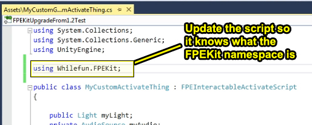
- Select the FPEInteractionManager, FPEPlayerController, and FPEEventSystem prefabs, and delete them from your scene. Place a single FPECore prefab into your scene.
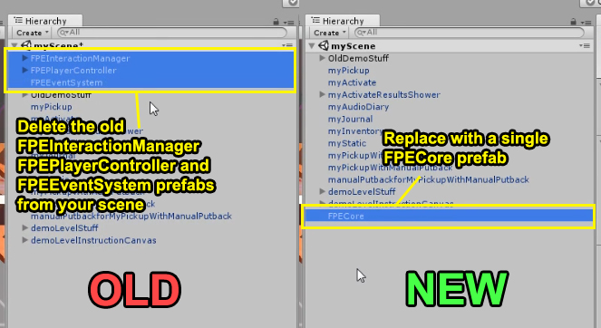
Section 4: Running the Scene:
- If you have any of the old Inventory type objects in your scene, you will see this error:
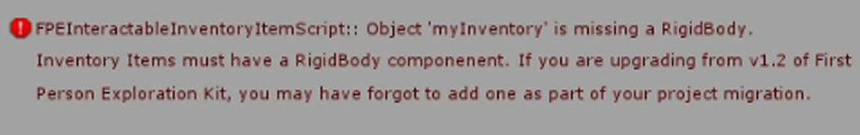
- To fix this error, add a Rigidbody component to all your inventory prefabs. Re-run the scene to ensure these errors are gone.
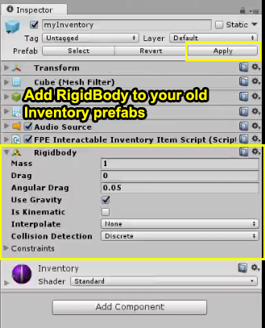
- Run the scene again, and you should no longer see any errors.
Section 5: Preparing Custom Assets for Game Save/Load Compatibility:
- All of your Pickup and Inventory type prefabs must be loadable at runtime via a Resources.Load call. In order to support this, all of these prefabs must live inside a Resources folder. Additionally, all Audio Diary audio clips must also be in Resources. Place your assets in the following folder structure:
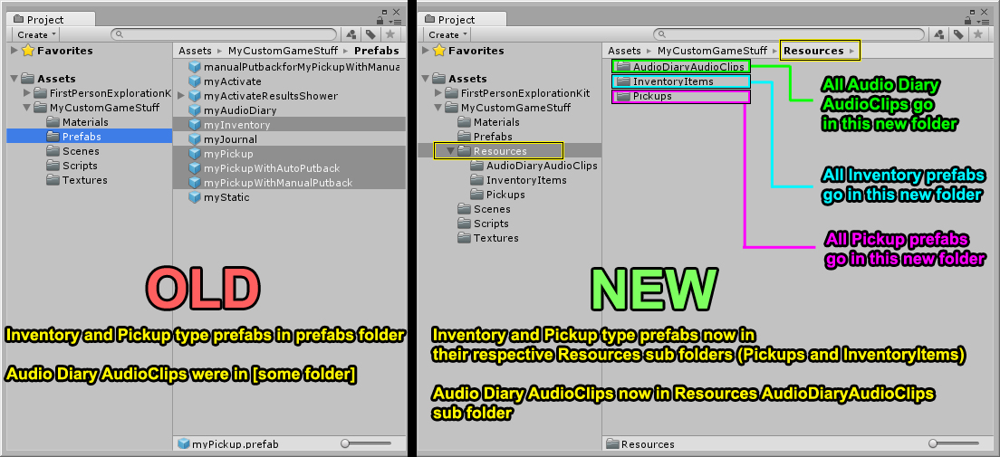
- You also need to prepare Inventory items and their corresponding lookup values. To do this, you need to add the old enum values from Section 1 above back into the FPEInventoryManager eInventoryItems enum, as shown below:
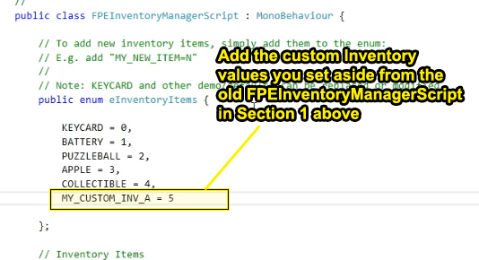
- Also add a new lookup value inside the FPEObjectTypeLookup script, as shown below. This will ensure that the Save/Load system knows which prefab corresponds to which Inventory type.

- The old values may have a different index than they did before (depending on your decision to keep the provided enum values). If so, you will need to double check that your Inventory prefabs have the right value. Click on the prefab, and look at the FPEInventoryUItem
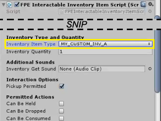
Note: There are new bits of information for Inventory items that include player action options as well as Item Name, Item Description, and Item Image. These can be configured in the Inspector:
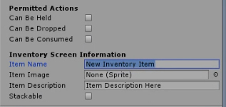
For more details, please refer to the Inventory Items Section of the documentation.
- The last important difference between v1.x and v2.x is the addition of the Menu System. Projects built using v2.x must include a "Main Menu" scene at build index 0 of the Build Settings in order to function correctly. Scene index 0 is a specially reserved scene for "2D" UI interactions, rather than 3D game interactions. See the section on Making Your First Build for more details.
- You are finished migrating your project, hooray! If you are stuck, or getting weird errors, please email support@whilefun.com with details and we'll try to get things fixed up and working.